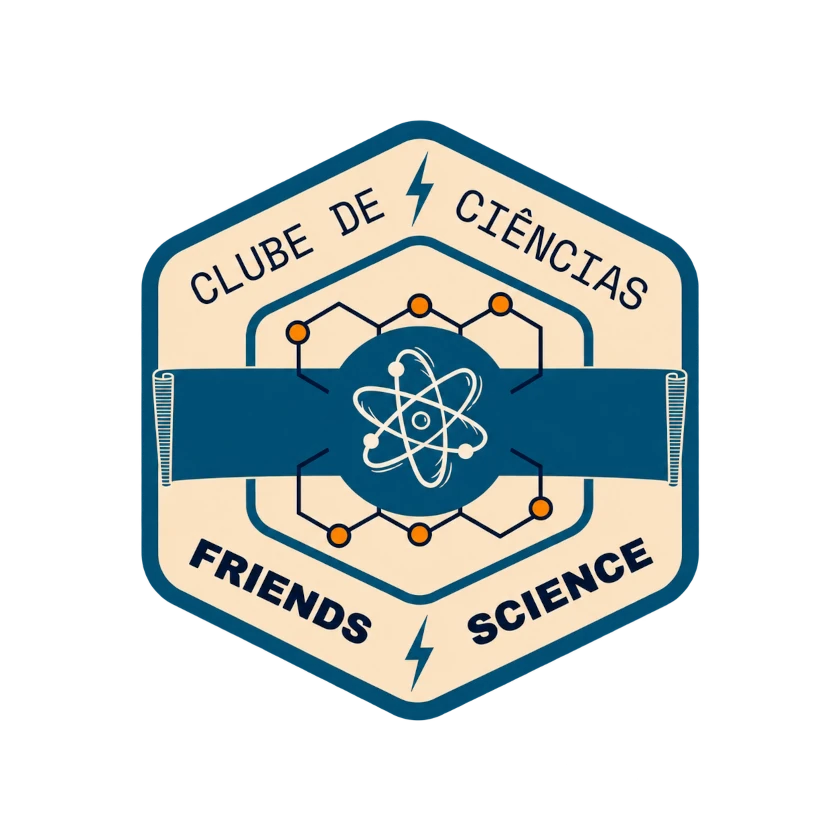

Clube de Ciências
Um lugar para fazer perguntas.

Friends Science
Little Scientists
Clube de Ciências
No Clube de Ciências, os estudantes podem observar, fazer perguntas e investigar assuntos que despertam sua curiosidade.
Nesta página, você encontra os clubes orientados pelas professoras Gabriele e Marlene.
Conheça os clubes